实验思考题
Thinking 5.1
Q： 查阅资料，了解 Linux/Unix 的 /proc 文件系统是什么？有什么作用？ Windows 操作系统又是如何实现这些功能的？proc 文件系统这样的设计有什么好处和可以改进的地方？
A： /proc是一种伪文件系统（也即虚拟文件系统），存储的是当前内核运行状态的一系列特殊文件，用户可以通过这些文件查看有关系统硬件及当前正在运行进程的信息，甚至可以通过更改其中某些文件来改变内核的运行状态。
这样设计可以让用户以访问文件的方式访问进程信息，方便了用户的使用。此外，它只存在内存当中，而不占用外存空间，省去了访问一般文件时将数据从外存加载入内存的时间开销，访问速度非常快。但是正因如此，它会占用很多的内存空间。
Windows系统是通过使用WMI来实现相似功能的——WMI是可伸缩的系统管理结构，该规范采用⼀个统一、基于标准且可扩展的面向对象接口。它提供与系统管理员信息和基础WMI API交互的标准方法，主要由系统管理应用程序开发⼈员和系统管理员⽤来访问和操作系统管理信息；它可用来生成组织和管理系统信息的工具，使系统管理⼈员能够更密切的监视系统活动。
Thinking 5.2
Q： 如果我们通过 kseg0 读写设备，我们对于设备的写入会缓存到 Cache 中。通过 kseg0 访问设备是一种错误的行为，在实际编写代码的时候这么做会引发不可预知的问题。请你思考：这么做这会引起什么问题？对于不同种类的设备（如我们提到的串口设备和 IDE 磁盘）的操作会有差异吗？可以从缓存的性质和缓存刷新的策略来考虑。
A： 当外部设备自身更新数据时，如果此时CPU写入外设的数据还只在缓存中，则缓存的那部分数据就只能在外设自身更新后再写入外设（只有缓存块将要被新进入的数据取代时，缓存数据才会被写入内存），这样就会发生错误的行为。
串口设备读写频繁，而IDE磁盘读写频率相对较小，因此串口设备发生错误的概率要远大于IDE磁盘。
Thinking 5.3
Q： 比较 MOS 操作系统的文件控制块和 Unix/Linux 操作系统的 inode 及相关概念，试述二者的不同之处。
A： 文件控制块和inode都是记录已打开文件的相关信息，但是两者又有很多不同。
-
存储内容不同,文件控制块中的内容有——
- 文件名
- 文件大小
- 文件类型
- 文件数据块的直接指针列表
- 储存文件数据块指针的间接磁盘块指针
- 文件所在目录的指针
而inode中的内容包括——
- 文件的字节数，块数
- 文件拥有者的User ID
- 文件的Group ID
- 文件的读、写、执行权限
- 文件的时间戳，共有三个：ctime指inode上一次变动的时间，mtime指文件内容上一次变动的时间，atime指文件上一次打开的时间。
- 链接数，即有多少文件名指向这个inode
- 文件数据block的位置
- inode编号
-
文件控制块顺次排列在目录文件中，而在Linux系统中，目录文件是由一系列目录项组成，每个目录项由文件名和指向inode的指针组成，占用空间远远小于文件控制块，查找操作的系统开销也大大减小。
-
MOS中的文件控制块仅支持一级间接指针域，也只有一个；而Linux中的inode支持多级间接指针域，可以存储更大的文件。
Thinking 5.4
Q： 查找代码中的相关定义，试回答一个磁盘块中最多能存储多少个文件 控制块？一个目录下最多能有多少个文件？我们的文件系统支持的单个文件最大为 多大？
A： 通过查看文件控制块的定义，我们可以发现，每个文件控制块都被数组f_pad强制对齐为256B。
struct File {
u_char f_name[MAXNAMELEN];
u_int f_size;
u_int f_type;
u_int f_direct[NDIRECT];
u_int f_indirect;
struct File *f_dir;
//BY2FILE = 256
u_char f_pad[BY2FILE - MAXNAMELEN - 4 - 4 - NDIRECT * 4 - 4 - 4];
};- 一个磁盘块的容量为4KB，因此最多可以容纳16个文件控制块。
- 一个目录文件最多可以使用1024个磁盘块存储数据，因此一个目录下最多1024*16 = 16384个文件。
- 一个文件最多可以使用1024个磁盘块存储数据，因此一个文件最大容量为1024*4KB = 4MB。
Thinking 5.5
Q： 请思考，在满足磁盘块缓存的设计的前提下，我们实验使用的内核支持的最大磁盘大小是多少？
A： 块缓存所在的地址空间为[0x10000000, 0x50000000),因此我们的内核能够支持的磁盘大小为0x40000000,也就是1GB。
Thinking 5.6
Q： 如果将 DISKMAX 改成 0xC0000000, 超过用户空间，我们的文件系统还能正常工作吗？为什么？
A： 不可以正常工作。如果DISHMAX值为0xC0000000，则有一部分块缓存会在内核空间中。而我们的文件系统属于文件用户态进程，无法访问内核空间的数据（访问内核空间数据时会出现TOO LOW报错）。
Thinking 5.7
Q： 在 lab5 中，fs/fs.h、include/fs.h 等文件中出现了许多结构体和宏定义，写出你认为比较重要或难以理解的部分，并进行解释。
A： 文件控制块（File）定位文件数据的方式比较重要，需要特别关注。每个文件的数据分布在不相邻的一系列磁盘块中，我们可以将其称为文件数据块，每个文件对应的文件控制块里都记录了所有文件数据块的指针（即下标）。文件控制块有10个直接指针，保存在数组f_direct[10]中，另外还有1014个间接指针（前10个保留不用），这些指针储存在f_indirect所指向的磁盘块中。示意图可见”实验难点图示“部分。
Thinking 5.8
Q： 阅读 user/file.c，你会发现很多函数中都会将一个 struct Fd* 型的 指针转换为 struct Filefd* 型的指针，请解释为什么这样的转换可行。
A： 首先，每个文件描述符fd都独占一页的，远大于struct Fd和struct Filefd的大小，因此将struct Fd*强制转换为struct Filefd*不会访问其他不相关的数据。
其次，每个strcut Filefd的开头都包含一个struct File，将struct Fd*强制转换为struct Filefd*后，同样可以通过p->f_fd来访问原先struct Fd中数据。这和面向对象中基类和派生类的关系十分相似，如果将struct Fd想象成基类，struct File想象成派生类，将基类的指针"向下转型"到派生类的指针是没有任何问题的。
Thinking 5.9
Q： 在lab4 的实验中我们实现了极为重要的fork 函数。那么fork 前后的父子进程是否会共享文件描述符和定位指针呢？请在完成练习5.8和5.9的基础上编写一个程序进行验证。
A： 一个进程所有的文件描述符都存储在[FDTABLE, FILEBASE)这一地址空间中。在fork函数执行时，会将这父进程页表中映射一部分地址的页表项拷贝到子进程的页表中，因此fork前后的父子进程会共享文件描述符和定位指针。
Thinking 5.10
Q： 请解释Fd, Filefd, Open 结构体及其各个域的作用。比如各个结构体会在哪些过程中被使用，是否对应磁盘上的物理实体还是单纯的内存数据等。说明形式自定，要求简洁明了，可大致勾勒出文件系统数据结构与物理实体的对应关系与设计框架。
A：
-
Fd结构体定义及各个域的作用如下所示
struct Fd { u_int fd_dev_id; //文件对应的设备id u_int fd_offset; //文件指针所指向的位置 u_int fd_omode; //文件打开模式 };该结构体主要用于记录已打开文件的状态，便于用户直接使用文件描述符对文件进行操作、申请服务等等。由于文件描述符主要是为用户所使用，因此它对应的是磁盘映射到内存中的数据。
-
Filefd的结构体定义及各个域的作用如下所示
struct Filefd { struct Fd f_fd; //文件描述符结构体 u_int f_fileid; //文件id，表示该文件在opentab中的位置 struct File f_file; //文件控制块 };文件描述符中存储的数据毕竟是有限的，有的时候我们需要将
Fd*强制转换为Filefd*从而获取到文件控制块，从而获得更多文件信息，比如文件大小等等。 -
Open结构体定义及各个域的作用如下所示
struct Open { struct File *o_file; // 文件控制块指针 u_int o_fileid; // 文件id int o_mode; // 文件打开方式 struct Filefd *o_ff; // Filefd结构体 };这个结构体主要被文件系统服务进程使用，用于记录所有进程中被打开的文件。每个被打开的文件都对应一个
Open结构体，所有的结构体依次排列在数组opentab[MAXOPEN]，每次我们只需要通过file_id来查找即可。
Thinking 5.11
Q： UML时序图中有多种不同形式的箭头，请结合UML 时序图的规范，解释这些不同箭头的差别，并思考我们的操作系统是如何实现对应类型的进程间通信的。
A： UML时序图中有以下几种箭头——
| 消息类型 | 表示 |
|---|---|
| 同步消息 | 用黑三角箭头搭配黑实线表示 |
| 异步消息 | 用两条小线的开箭头和黑色实线表示 |
| 返回消息 | 用黑三角箭头搭配黑色虚线表示 |
| 创建消息 | 用开三角箭头搭配黑实线表示，其下面特别注明 <<create>> |
| 摧毁消息 | 用黑三角箭头搭配黑实线表示，其下面特别注明 <<destroy>> |
| Lost and Found Message | 用一个黑色实心的点和黑色实心三角箭头黑实线表示 |
我们的操作系统是通过IPC来实现进程间通信的，这种方式传递的信息本质上是一种同步消息。具体流程是：发送方先调用ipc_send函数，该函数通过一个死循环来不断向接收方信息。当接收方成功接收到消息时，ipc_send函数跳出循环并结束，这时发送方再调用ipc_recv函数主动放弃CPU，等待接收返回信息。
整个流程在函数fsipc里得到体现
static int fsipc(u_int type, void *fsreq, u_int dstva, u_int *perm)
{
u_int whom;
ipc_send(envs[1].env_id, type, (u_int)fsreq, PTE_V | PTE_R);
return ipc_recv(&whom, dstva, perm);
}Thinking 5.12
Q： 阅读serv.c/serve函数的代码，我们注意到函数中包含了一个死循环for (;;) {...}，为什么这段代码不会导致整个内核进入panic 状态？
A： 这个死循环并不会导致CPU的轮询，原因是每次循环会调用ipc_recv函数。在这个函数被调用后，文件系统服务进程就会主动让出CPU（进程状态被标记为NOT_RANNABLE），直到用户进程向该进程申请服务（调用ipc_send）时才会被唤醒，进而为用户进程提供服务。因此，循环的次数始终等于文件系统服务进程提供服务的次数，并不会导致内核进入panic状态。
实验难点图示
我认为本次实验主要包含以下难点——
- 文件数据块的定位方式
- fsformat.c中函数的调用关系
- 文件系统的地址空间布局
- 用户进程和文件系统服务进程的交互
文件数据块的定位方式
每个文件的数据分布在不相邻的一系列磁盘块中，我们可以将其称为文件数据块，每个文件对应的文件控制块里都记录了所有文件数据块的指针（即下标）。文件控制块中有10个直接指针，保存在数组f_direct[10]中，另外还有1014个间接指针（前10个保留不用），这些指针储存在f_indirect所指向的磁盘块中。
假设某文件是一个目录文件，则其定位数据块的方式如下图所示

fsformat.c中函数的调用关系
在本次实验中，我们需要通过fsformat.c文件创建磁盘镜像gxemul/fs.img，这个磁盘镜像可以模拟与真实的磁盘文件设备之间的交互。
fsformat.c中函数的调用关系如下所示——

文件系统的地址空间布局
文件系统的正常工作也需要占用一定的内存空间。
- 文件服务进程需要占用
[0x10000000, 0x50000000)这一1GB空间作为块缓存。 - 用户进程还需要占用
[0x5fc00000, 0x600000000)这一4MB空间来储存文件描述符。因为用户进程最多只能开32个文件描述符，每个文件描述符占用一页，因此实际上这一空间是无法占满的，最多占用32*4KB=128KB。
- 用户进程需要占用
[0x60000000, 0x680000000)这一128MB空间作为文件内容缓存区。缓存区的每个页面都和文件服务进程中的对应块缓存映射到同一个物理页，并标记为PTE_LIBARAY。因为用户进程最多只能有32个文件描述符，因此只能同时打开32个文件，每个文件最多占用4MB空间，因此用户进程缓存区大小为32*4MB=128MB。
地址空间布局如下所示
用户进程和文件系统服务进程的交互
用户进程通过文件系统的用户接口申请服务，该请求会通过IPC机制告知文件系统服务进程（fsipc.c），然后由文件系统服务进程提供服务（serve.c）。不同用户接口及其服务的流程如下所示——

体会与感想
本次实验的代码填写比较简单，根据代码注释和指导书的提示就可以轻松完成，评测拿到满分并不困难。
尽管实验任务比较简单，但是这次实验涉及的代码文件更多，新增代码多达千余行，新增结构体也有十几个，给代码的理解带来了很多困难。因此，要想真正理解每个函数的作用、函数之间的调用关系以及用户申请文件系统服务的流程，还需要下一番功夫。
附录：Lab 5 函数解读